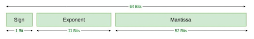

Code
@show p = 22/7;p = 22 / 7 = 3.142857142857143The real numbers \(\mathbb{R}\) are infinite in two ways:
In computation, the second type of infiniteness has many consequences! We don’t often need to compute with numbers that are growing unbounded, but we likely often encounter numbers that have relatively small magnitude but require infinite precision to represent. For instance, think of \(\pi\)!
Note that computers necessarily have finite memory and thus cannot exactly represent all real numbers.
There are a finite number of real numbers that can be represented in memory, and there are many sets of numbers that one can choose to represent.
Note that we may rewrite \(f = 2^{-d} \sum_{i=1}^d b_i 2^{d-i} = 2^{-d} z\) where \(z \in \{0, 1, \cdots, 2^d - 1\}.\)
Note that this is the distance between \(1\) and the smallest element of \(\mathbb{F}\) greater than \(1\), \(1 + 2^{-d}\).
Now, remember that an element of \(\mathbb{F}\) represents all real numbers closest to it. It will be useful to be able to represent which element of \(\mathbb{F}\) represents a given real number. We’ll define a function \(\text{fl}(x)\) to help us with this map.
The distance between consecutive floating-point numbers in \([2^n, 2^{n+1})\) is \[2^n\epsilon_{\text{mach}} = 2^{n-d}.\] Thus, for real \(x \in [2^n, 2^{n+1})\) we have the bound \[|\text{fl}(x) - x| \le \frac12 2^n \epsilon_{\text{mach}} \le \frac12 \epsilon_{\text{mach}} |x|.\]
The accuracy of an approximation \(\tilde{x}\) to the number of interest \(x\). The floating-point number approximation \(\tilde{x}\) is represented using \(d\) binary digits, but not all of these binary digits may accurately represent (agree) with the number of interest \(x\) (which we may be unable to represent exactly as a floating-point number).
Note that absolute accuracy has the same units as \(x\) (and may be impacted by the scale of \(x\)), while relative accuracy is dimensionless. The number of accurate digits is \[-\log_{10} \frac{|\tilde{x} - x|}{|x|}.\]
@show p = 22/7;p = 22 / 7 = 3.142857142857143One really cool feature of the Julia programming language is that we can write programs using a broad variety of unicode characters. For instance, below we have used the unicode character \(\pi\) – we get this to appear by typing \pi and then the tab button. Many symbol commands from LaTeX work in this same way, and additionally many more symbols can be completed – see the table at https://docs.julialang.org/en/v1/manual/unicode-input/.
@show float(π);float(π) = 3.141592653589793acc = abs(p - π)
println("absolute accuracy = $acc")
println("relative accuracy = $(acc/π)")absolute accuracy = 0.0012644892673496777
relative accuracy = 0.0004024994347707008Another nice feature of Julia is the $, which substitutes the named variable or expression’s value into the string. This is sometimes called interpolation.
println("Number of accurate digits = $(floor(-log10(acc/π)))")Number of accurate digits = 3.0The precision of a floating-point number is always \(d\) binary digits. This is a measure between floating-point numbers.
In 1985, the IEEE set the standard (IEEE 754) for binary and decimal floating point numbers and algorithms for rounding arithmetic operations, which are (generally) followed by all major computer manufacturers.


The IEEE double precision floating point number has value \[(-1)^s 2^{c - 1023} (1 + f),\]
where
Why do you think 1023 is subtracted from \(c\) in the exponent? Note that if we do not shift the exponents in this way, only numbers of magnitude greater than 1 can be represented. Subtracting 1023 (roughly half of the largest value \(c\) takes on) means that roughly half of the possible exponents are positive and half are negative.
The Julia command for double precision \(\epsilon_{\text{mach}}\) is eps(). Recall that this value is proportional to the spacing between adjacent floating-point values at 1.0.
@show eps();
@show eps(1.0);
@show log2(eps());eps() = 2.220446049250313e-16
eps(1.0) = 2.220446049250313e-16
log2(eps()) = -52.0We can get values proportional to the spacing at other values by passing them as input to eps().
@show eps(1.618);
@show eps(161.8);eps(1.618) = 2.220446049250313e-16
eps(161.8) = 2.842170943040401e-14We can also see the next floating-point number larger than a given value using nextfloat().
@show nextfloat(161.8);
@show nextfloat(161.8) - 161.8;nextfloat(161.8) = 161.80000000000004
nextfloat(161.8) - 161.8 = 2.842170943040401e-14The range3 of positive values representable in double precision is
@show floatmin(), floatmax();(floatmin(), floatmax()) = (2.2250738585072014e-308, 1.7976931348623157e308)Like other languages, Julia has different types, which is very important for numerical computing (as we’ll see in more detail later)!
@show typeof(1);
@show typeof(1.0);typeof(1) = Int64
typeof(1.0) = Float64The standard floating-point representation is Float64, which is IEEE double precision using 64 bits. We can ask Julia to show us the bits using bitstring.
[bitstring(1.0), bitstring(-1.0), bitstring(2.0)]3-element Vector{String}:
"0011111111110000000000000000000000000000000000000000000000000000"
"1011111111110000000000000000000000000000000000000000000000000000"
"0100000000000000000000000000000000000000000000000000000000000000"Note that the representation of Int64 is different!
[bitstring(1), bitstring(-1), bitstring(2), bitstring(-2)]4-element Vector{String}:
"0000000000000000000000000000000000000000000000000000000000000001"
"1111111111111111111111111111111111111111111111111111111111111111"
"0000000000000000000000000000000000000000000000000000000000000010"
"1111111111111111111111111111111111111111111111111111111111111110"Julia can also give the sign, exponent, and significand in decimal. Note that the significand is the entire floating-number without the exponential; that is \((-1)^s (1 + f)\).
x = -1.0
@show sign(x), exponent(x), significand(x);(sign(x), exponent(x), significand(x)) = (-1.0, 0, -1.0)x = 0.125
@show sign(x), exponent(x), significand(x);(sign(x), exponent(x), significand(x)) = (1.0, -3, 1.0)The definition of floating-point numbers \(\mathbb{F}\) given on slide 5 did not put limits on the exponent, but in double precision we have \(-1022 \le n \le 1023\).
Inf in memory.Overflow and underflow can cause very real, and very disastrous problems. In 1996, the European Space Agency launched their $7 billion Arianne 5 rocket, which they had spent 10 years developing. It exploded less than 40 secons into the the flight sequence. The ‘Inertial Reference System’ software that used calculations involving the velocity of the rocket to manage the flight path attempted to convert a bit of data from 64-bit floating point to 16-bit signed integer. Due to the higher velocity of the Arianne 5 rocket over previous versions, the bit of data to be converted had value greater than \(2^{15}\), which caused overflow and the guidance system to shut down.
You should also be aware of one more double-precision value: NaN, which stand for not a number. This value is adopted after undefined arithmetic operations (like division by zero or division by values in underflow).
In a computer, arithmetic operations operate on floating-point numbers and return floating-point results. IEEE standards define machine-analog operations for the arithmetic operations \(+, -, \times, \div, \sqrt{\cdot}\), etc. Perhaps the most important thing for you to know is that while operations \(+, -, \times, /\) produce exact results, the machine-analog operations, which we will denote \(\oplus, \ominus, \otimes, \oslash\), are not guaranteed to do so.
Recall that there is no double-precision number between \(1\) and \(1 + \epsilon_{\text{mach}}\). This causes the following loss of accuracy.
e = eps()/2
(1.0 + e) - 1.00.0However, in the interval \([1/2,1)\), floating-point numbers have spacing \(\epsilon_{\text{mach}}/2\), so \(1 - \epsilon_{\text{mach}}/2\) and its negative are exactly representable. Rewriting the calculation above results in a very different, and exactly correct, result!
1.0 + (e - 1.0)1.1102230246251565e-16Computer addition is not associative! This, amongst the many other surprising facts about computer arithmetic, emphasizes how important it is to think through computer implementations of even simple algorithms. The IEEE standard for floating-point addition, alone, is several pages long!
An important job of one working in scientific computation is to ensure that results are computed in such a way that they are close together!
Think about the problem of subtracting \(1\) from a number \(x\); this result is given by the function \(f(x) = x - 1\). On a computer, \(x\) is represented by \(\text{fl}(x)\) and by the previous inequality \(|\text{fl}(x) - x| \le \frac12 \epsilon_{\text{mach}} |x|\) we have \(\text{fl}(x) = x(1 + \epsilon)\) for some \(|\epsilon| < \epsilon_{\text{mach}}/2\). Also, \(\text{fl}(1) = 1\), since it can be represented exactly.
Even if the floating-point arithmetic addition is exact, so \(x \ominus 1 = x(1 + \epsilon) - 1\), the relative error in this result is \[\frac{|(x + \epsilon x - 1) - (x-1)|}{|x-1|} = \frac{|\epsilon x|}{|x-1|}.\] This relative error can be unboundedly poor by taking \(x\) very close to \(1\).
Subtractive cancellation renders some of the digits in our floating-point representations essentially meaningless, since they are zeroed in our calculation. You may have encountered this previously. Consider adding -1.0012 to 1.0000, both of which are results rounded to five decimal digits. The result is -0.0012, which has only two digits. Three digits were “lost” in this calculation, and no algorithm could save them as we had cut the inputs at a fixed number of digits.
Consider a problem – this is a calculation or task for which you might write an algorithm. We’ll represent a problem as a function \(f\) that maps a real data value \(x\) to a real result \(f(x)\), and denote this \(f: \mathbb{R} \rightarrow \mathbb{R}\). Everything here denotes exact calculations – data \(x\) is represented exactly and the exact result \(f(x)\) is computed exactly.
In a computer, the problem \(f\) will be approximated in floating-point. Here the data \(x\) is represented as an input \(\tilde{x} = \text{fl}(x)\).
Realistically the calculations required to solve the problem \(f\) will also be inexact and so we might instead solve a different problem \(\tilde{f}\). Here the output \(\tilde{f}(x)\) could be different from the result \(f(x)\).
Setting aside the sources of error in the problem calculations, we’ll consider the ratio of the relative errors of the result and the data, \[\frac{\frac{|f(x) - f(\tilde{x})|}{|f(x)|}}{\frac{|x - \tilde{x}|}{|x|}}.\] This ratio gives us a sense of how much the effect of the error in the representation of the data has on the solution of the problem.
Now, think about what would happen in a perfect computer where the floating-point representation is perfect, \(\epsilon \rightarrow 0\).
Note that this is the limit of the ratio of the error in the result (of the problem) to the input error, as the input error goes to 0. It does not depend upon the computer, or the algorithm for solving the problem, only the ideal data \(x\) and the problem \(f\).
Using the previous exercise, we see that the condition number for the problem of subtracting a constant number \(c\) from data \(x\), \(f(x) = x - c\), has condition number \[\kappa_f(x) = \left| \frac{(x)(1)}{x-c} \right| = \frac{|x|}{|x-c|}\] which is large when \(|x| \gg |x-c|\).
Multiplication has the same relative error in the result as in the data!
If \(|\epsilon|\) is small, we expect \[\left| \frac{f(x + \epsilon x) - f(x)}{f(x)} \right| \approx \kappa_f(x) |\epsilon|.\] When the data \(x\) is perturbed by a small amount \(\epsilon\), the relative error in the result is magnified by a factor of \(\kappa_f(x)\).
When the condition number of a problem is large, we cannot expect errors in the result to remain comparable in size to roundoff error. This type of problem is called ill-conditioned. We say a problem \(f\) is ill-conditioned when \(\kappa_f(x) \gg 1\). There is no strict threshold for this inequality. It is important to think about the repercussion of your problem’s condition number!
Some problems, such as \(f(x) = \sqrt{x}\), can have a condition number less than 1. However, every result in floating-point arithmetic is subject to rounding error at the relative level of \(\epsilon_{\text{mach}}\), so in practice, \(\kappa_f(x) < 1\) is no different from \(\kappa_f(x) = 1\).
We’re going to consider the problem of calculating roots of a quadratic polynomial; that is finding values \(t\) such that \(at^2 + bt + c = 0\). We’ll start first by considering the conditioning of the problem, which we might write \(f([a,b,c]) = [r_1,r_2]\) for coefficients \(a, b, c\) and roots \(r_1, r_2\).
Since we’ve been thinking of conditioning for problems which are scalar functions, let’s think only of how \(r_1\) changes as we vary \(a\) and hold \(b\) and \(c\) fixed, that is \(f(a) = r_1\).
Now, noting that \(a r_1^2 + b r_1 + c = 0\), we may differentiate with respect to \(a\) and get \[r_1^2 + 2 a r_1 \frac{d r_1}{d a} + b \frac{d r_1}{d a} = 0.\]
Solving this for the derivative, we have \(\frac{d r_1}{d a} = \frac{-r_1^2}{2ar_1 + b},\) and thus, the conditioning is \[\kappa_f(a) = \left|\frac{a}{r_1} \frac{d r_1}{d a}\right| = \left| \frac{ar_1}{2ar_1 + b}\right| = \left| \frac{r_1}{r_1 - r_2}\right|.\]
Here, we have used the quadratic formula and the fact that \[\frac{|2ar_1 + b|}{|a|} = \frac{|\sqrt{b^2 - 4ac}|}{|a|} = |r_1 - r_2|.\]
Thus, the condition number of a root can be arbitrarily large!
If a polynomial has a repeated root, then the condition number of the polynomial is formally infinite.
The polynomial \(p(x) = \frac13 (x-1)(x-1-\epsilon)\) has roots \(1\) and \(1+\epsilon\). For small values of \(\epsilon,\) the roots are ill-conditioned.
ϵ = 1e-6
a,b,c = 1/3, (-2-ϵ)/3, (1+ϵ)/3;We can use unicode \(\epsilon\) as a variable by typing \epsilon and then hitting tab. Additionally, we can make multiple variable assignments at once, as in Line 2 above. The ; suppresses the output from the executed Julia code.
We can use the quadratic formula to compute the roots (this is an algorithm)!
d = sqrt(b^2 - 4a*c)
r₁ = (-b-d)/(2a)
r₂ = (-b+d)/(2a)
(r₁,r₂)(0.9999999998251499, 1.0000010001748503)To get \(r_1\) above, we type r\_1 and hit Tab. Let’s now look at the relative error in \(r_1\)!
abs(r₂-(1+ϵ))/(1+ϵ)1.748501815656639e-10Since the condition number is proportional to \(1/2\epsilon\), we estimate the roundoff in the data can grow in the result to be approximately \(\epsilon_{\text{mach}}/2\epsilon\).
eps()/2ϵ1.1102230246251565e-10Note: “Bit” was coined by Claude Shannon (of information theory fame – e.g., “Shannon entropy”) and attributed to Tukey (a famous statistician)!↩︎
This definition is simpler than how numbers are truly represented in the computer. This will be our working definition for class, but to give you a small sense of how things are more complex in reality, we’ll dig a bit into the IEEE standards.↩︎
A common mistake made is to think that \(\epsilon_{\text{mach}}\) is the smallest magnitude floating-point number. It is only the smallest relative to 1.0. The exponent limits the scaling of values – the distance between floating-point numbers (governed by the mantissa) is smallest when the values themselves (governed by the exponent) are smallest.↩︎